Imagem: Tabletop Tycoon (partida em andamento)Alocação de trabalhadores · Construção de vila
Como jogar Everdell
Para quem nunca jogou1 a 4 jogadores60 a 120 min14+Edição Galápagos (Asmodee)
· Redação Elite Boardgamers
Resumo em 1 minuto
Você manda trabalhadores aos locais do vale para juntar recursos e paga com eles as cartas que formam a sua vila; depois do outono, vence quem tiver mais pontos.
No seu turno, você faz uma ação: alocar um trabalhador, jogar uma carta da mão ou da Campina, ou preparar-se para a próxima estação.
Local de círculo fechado aceita um só trabalhador; a mão nunca passa de 8 cartas, e a vila tem 15 espaços.
Primavera, verão e outono trazem trabalhadores novos; depois do outono, cada um joga até passar a vez, e somam-se cartas, fichas, bônus, Jornada e Eventos.
Como você aprende: 4 etapas, da mesa montada à contagem de pontosLeitura do essencial: cerca de 8 min
À vista, só o essencial para jogar. O que abre com + é explicação, exemplo, exercício ou regra de caso especial: abra quando precisar.
Montar a mesa passo a passo
A montagem segue a página de preparação do manual p. 6, na mesma ordem, com a ilustração numerada da p. 7. É igual para 2, 3 ou 4 jogadores, salvo no número de cartas de Floresta (passo 5), no segundo espaço das cartas de Floresta, que só se usa com 4 jogadores, e nas cartas que cada um recebe, que dependem da ordem de jogo (passo 13).
O que vem na caixap. 4 e 5:
Componente
Quantidade
Tabuleiro
1
Árvore Perene de Ever, em peças para montar
1
Peças de Evento básico
4
Trabalhadores: Ouriços, Camundongos, Esquilos e Tartarugas
24, 6 de cada cor
Cartas de Criatura e de Construção (o baralho principal)
128
Cartas de Floresta
11
Cartas de Evento especial
16
Carta de vitória
1 (deixe na caixa: o manual não lhe dá regra)
Gravetos / cristais de resina / seixos / frutos
30 / 25 / 20 / 30
Fichas de pontuação
10 de 3 pontos e 20 de 1 ponto
Fichas de Ocupado
20
Dado de 8 lados
1, só para o modo solo
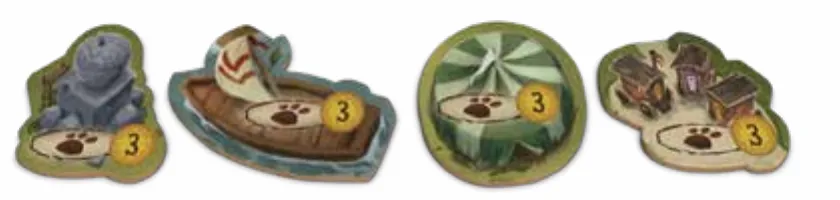
As quatro peças de Evento básico, de 3 pontos cada. Ilustração: manual Galápagos p. 4
1. O tabuleiro e a árvorep. 6
Ponha o tabuleiro no centro da mesap. 6. A p. 5 mostra a árvore em quatro estágios de montagem, sem instruções escritas.
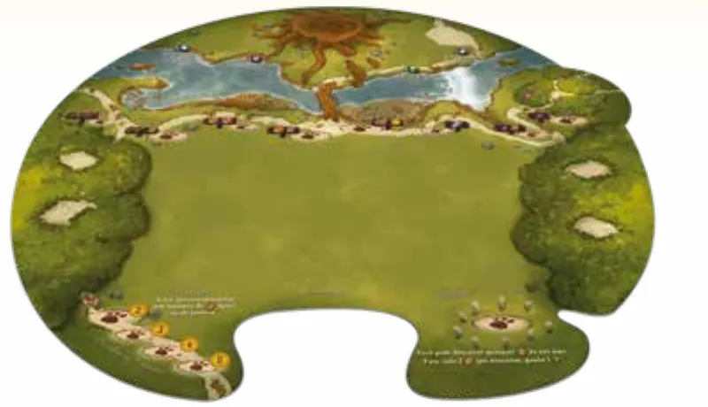
O tabuleiro: no alto, o rio e o toco da árvore; logo abaixo, a faixa dos locais básicos; dos lados, as clareiras da floresta; embaixo, à esquerda, a Jornada (espaços que valem pontos, usados só no outono) e, à direita, o Refúgio (onde se trocam cartas por recursos). Ilustração: manual Galápagos p. 4
Ponha a Árvore Perene de Ever no toco desenhado no topo do tabuleirop. 6.
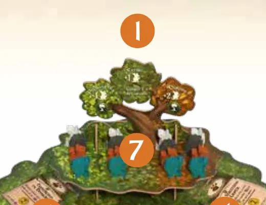
A Árvore Perene de Ever no toco do alto do tabuleiro (1), com os trabalhadores nos galhos de cima (7). Ilustração: manual Galápagos p. 7
2. Recursos e fichasp. 6 e 7
Ponha os gravetos, os cristais, os seixos e os frutos em quatro pilhas ao longo da margem do rio. Essas pilhas são o estoque geral. Os recursos não têm limite: se uma pilha acabar, use outra coisa no lugar p. 6 e 7.
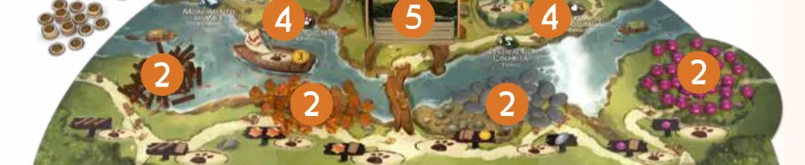
O estoque geral ao longo do rio (2): gravetos, cristais, seixos e frutos. Ilustração: manual Galápagos p. 7
Ponha as fichas de pontuação e as fichas de Ocupado ao lado do tabuleirop. 6. A ficha de Ocupado marca a Construção que já deu a sua Criatura gratuita (etapa 2, p. 10).
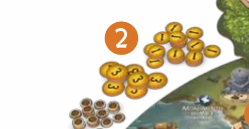
Fichas de pontuação e de Ocupado ao lado do tabuleiro. Ilustração: manual Galápagos p. 7
3. As cartas de Florestap. 6
Embaralhe as 11 cartas de Floresta e ponha algumas, viradas para cima, nas clareiras da floresta, dos dois lados do tabuleiro: 3 cartas com 2 jogadores, 4 cartas com 3 ou 4 jogadores. As outras voltam para a caixa p. 6.
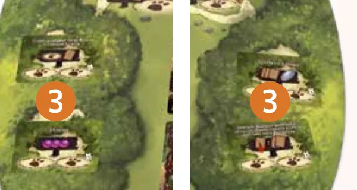
As cartas de Floresta nas clareiras dos dois lados do tabuleiro (3). Ilustração: manual Galápagos p. 7
4. Os Eventosp. 6
Ponha as 4 peças de Evento básico ao longo da margem do riop. 6.
Embaralhe as 16 cartas de Evento especial e ponha 4 nos galhos de baixo da Árvore Perene de Ever. As outras 12 voltam para a caixa p. 6.
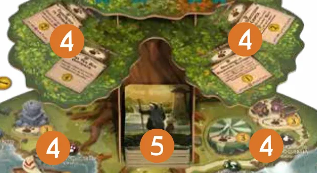
Os Eventos (4): peças básicas na margem do rio e cartas especiais nos galhos de baixo. No meio, o número 5 marca o baralho dentro da árvore. Ilustração: manual Galápagos p. 7
5. O baralho e a Campinap. 6 e 7
Embaralhe o baralho principal e abra 8 cartas viradas para cima na Campina, a área grande no meio do tabuleiro p. 6.
Ponha o resto do baralho dentro da Árvore Perene de Ever, no vão do tronco p. 6.
Deixe livre o recorte na borda de baixo do tabuleiro: ali fica a pilha de descarte, com as cartas viradas para baixo p. 7.
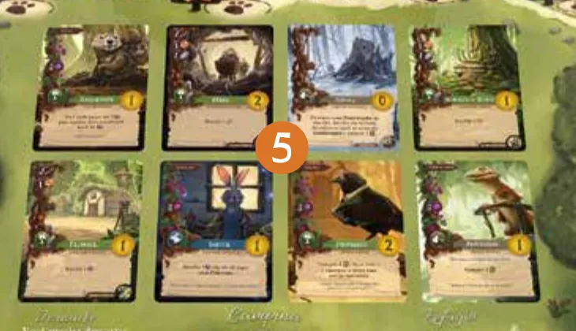
As 8 cartas da Campina, em duas fileiras de quatro; o 5 do meio é o mesmo número do passo do baralho. Ilustração: manual Galápagos p. 7
6. Cada jogador e quem começap. 6, 7 e 8
Cada jogador escolhe uma cor, pega os 6 trabalhadores dela e deixa 2 à sua frentep. 4 e 6. Deduzimos que os trabalhadores das cores sem dono ficam na caixa: o manual não fala deles.
Definam quem começa: a pessoa mais humilde da mesap. 6. Se preferirem, sorteiem: é um conselho deste guia, não do manual. A vez segue no sentido horário p. 8. O manual põe essa regra no fim da preparação, mas ela precisa vir antes do passo seguinte.
Cada jogador compra cartas do baralho, conforme a ordem de jogo: o primeiro compra 5, o segundo 6, o terceiro 7 e o quarto 8 p. 6.
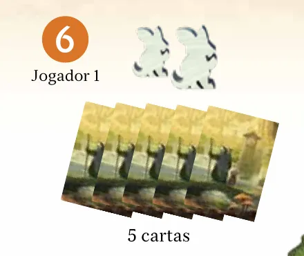
O Jogador 1 (6): 2 trabalhadores e 5 cartas. Ilustração: manual Galápagos p. 7
Cada jogador põe os outros 4 trabalhadores nos galhos de cima da árvore: 1 na primavera, 1 no verão e 2 no outono p. 6.
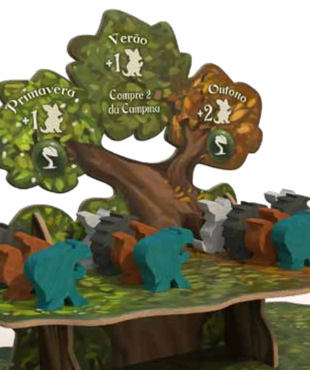
Os trabalhadores nos galhos de cima, sob os escudos das estações: primavera +1, verão +1, outono +2. Ilustração: manual Galápagos p. 13
Ninguém recebe recursos: a preparação p. 6 não dá recursos a ninguém; tudo vem dos locais e das cartas durante a partida.
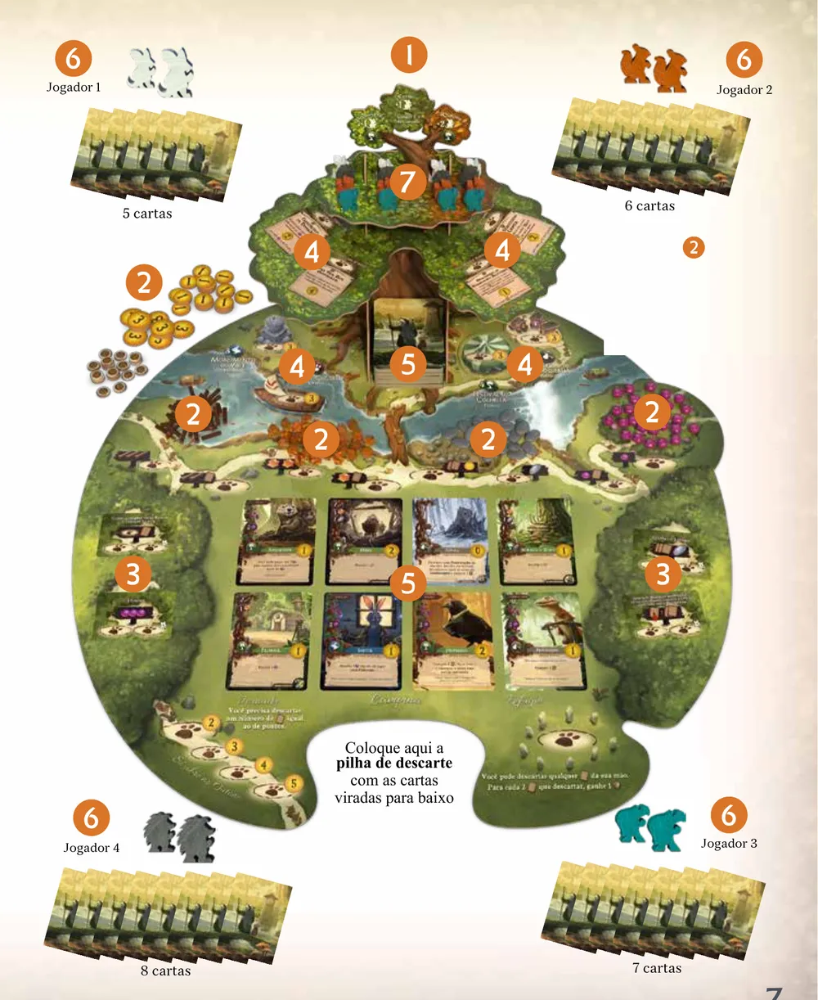
A mesa montada para 4 jogadores, com os números dos passos do manual (1 a 7). Ilustração: manual Galápagos p. 7Partida de 2 jogadores já em andamento, em imagem digital da editora (edição em inglês): a árvore com o baralho, a Campina, as cartas de Floresta e as vilas com várias cartas. Na montagem, as vilas começam vazias. Imagem: Tabletop Tycoon
O que muda com o número de jogadoresp. 6 e 8:
Jogadores
Cartas de Floresta na mesa
Que voltam para a caixa
Cartas na mão, na ordem de jogo
Segundo espaço das cartas de Floresta
2
3
8
5 e 6
não se usa
3
4
7
5, 6 e 7
não se usa
4
4
7
5, 6, 7 e 8
só o espaço com o símbolo de 4 jogadores
O que volta para a caixa: o manual manda guardar as cartas de Floresta e de Evento especial que sobram p. 6. Por dedução, ficam também na caixa os trabalhadores sem dono e o dado de 8 lados, que é só do modo solo p. 4, e a carta de vitória, que não tem regra.
Antes de começar, confira: árvore no toco; quatro pilhas de recursos na margem do rio; fichas ao lado; 3 ou 4 cartas de Floresta; 4 Eventos básicos no rio e 4 Eventos especiais nos galhos de baixo; 8 cartas na Campina e o baralho dentro da árvore; cada jogador com 2 trabalhadores à frente, 4 na árvore (1, 1 e 2) e as cartas da sua posição; quem começa definido.
Partida de 3 jogadores. Qual mesa está certa?
Com 3 ou 4 jogadores vão 4 cartas de Floresta para a mesa, e as mãos crescem pela ordem de jogo: 5 para o primeiro, 6 para o segundo, 7 para o terceiro p. 6.
Comece a jogar em 4 minutos
Meta: em 4 minutos de leitura, montar a mesa e jogar o seu primeiro turno sem abrir o manual.
A ideia do jogo
Você monta uma vila de bichos da floresta. Manda trabalhadores aos locais do tabuleiro para pegar recursos (gravetos, cristais, seixos e frutos) e cartas, e paga com eles as cartas de Criatura e de Construção que formam a sua vila. O ano passa em estações, e cada estação traz trabalhadores novos; no fim do outono, vence quem tiver mais pontos.
Monte a mesa
A montagem completa, com figuras, está na seção "Montar a mesa passo a passo", logo acima. O essencial p. 6:
Tabuleiro no centro, árvore no toco do alto, recursos em pilhas na margem do rio, fichas ao lado.
Cartas de Floresta nas clareiras: 3 com 2 jogadores, 4 com 3 ou 4.
Eventos (depois): 4 básicos no rio, 4 especiais nos galhos de baixo da árvore.
8 cartas abertas na Campina; o baralho dentro da árvore.
Cada jogador: 2 trabalhadores à frente e 4 nos galhos de cima (1 primavera, 1 verão, 2 outono). Cartas: 5 para quem começa, 6 para o segundo, 7 para o terceiro, 8 para o quarto.
Antes de dar as cartas do item 5, defina quem começa: a pessoa mais humilde (ou sorteiem). A vez segue no sentido horário.
Seu primeiro turno
No seu turno você faz uma de três ações: Alocar um Trabalhador, Jogar uma Carta ou Preparar-se para a Estaçãop. 8. Você começa sem nenhum recurso e com trabalhadores livres, por isso o primeiro turno quase sempre é alocar.
Ponha um trabalhador seu num espaço livre de um local e pegue na hora o que ele dá, do estoque geral ou do baralho p. 8.
Local exclusivo, de círculo fechado, aceita só 1 trabalhador, seja seu ou de outro. Local compartilhado, de círculo aberto, aceita vários, inclusive da mesma cor p. 8.
O trabalhador fica ali até você se preparar para a próxima estação p. 8.
Comprar carta é tirar do topo do baralho para a mão. A mão nunca passa de 8 cartas: compre só até ficar com 8 p. 11.
Os 8 locais básicos, na faixa do caminho logo abaixo do rio p. 8:
Local básico
Tipo
3 gravetos
exclusivo
2 gravetos e 1 carta
compartilhado
2 cristais
exclusivo
1 cristal e 1 carta
compartilhado
2 cartas e 1 ficha de 1 ponto
compartilhado
1 seixo
exclusivo
1 fruto e 1 carta
exclusivo
1 fruto
compartilhado
As cartas de Floresta também são locais, em geral mais fortes, com o que dão escrito na carta. Com 2 ou 3 jogadores, cada uma recebe só 1 trabalhador p. 8.
Os 8 locais básicos: a placa mostra o que o local dá; o círculo, se é exclusivo (fechado) ou compartilhado (aberto). O que dão e o tipo de três deles (2 gravetos e 1 carta, 1 cristal e 1 carta, 1 fruto) vêm só desta ilustração. Ilustração: manual Galápagos p. 8
Ainda não precisa saber
Pagar e jogar cartas, a vila de 15 espaços e a Criatura gratuita: etapa 2. Preparar-se para a Estação, a Produção (quando as cartas verdes rendem de novo), os Eventos, as cartas de Destino (cartas da vila que são locais) e a Jornada (pontos no outono): etapa 3. Fim da partida e pontos: etapa 4. O Refúgio, que troca cartas por recursos, está na etapa 1.
Como a partida acaba
Cada jogador passa por primavera, verão e outono no seu ritmo. Depois de se preparar para o outono, você joga até não poder ou não querer mais e passa a vez. Quando todos passaram, vence quem tiver mais pontos p. 12 e 14.
Prefere ver? Uma explicação das regras seguida de partida, gravada ao vivo. Ele complementa este guia; em caso de diferença, vale o manual.
Everdell - Regras & Gameplay Ao Vivo, canal Covil dos Jogos · abrir no YouTube
0Antes de tudo: o que é este jogoOpcional
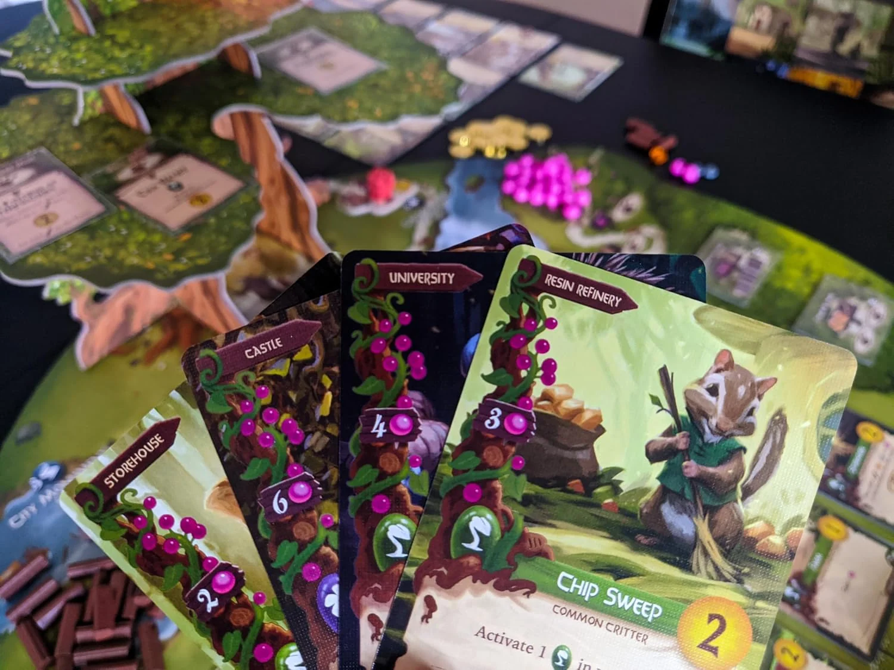
Imagem: Tabletop Tycoon (partida em andamento)Abrir esta seção
Everdell é um jogo de alocação de trabalhadores e de construção de vila para 1 a 4 pessoas, de James A. Wilson, com ilustrações de Andrew Bosley p. 23. Cada jogador lidera um grupo de criaturas que chega ao vale no fim do inverno e precisa erguer uma vila antes do inverno seguinte p. 2, 3 e 12.
Os recursos vêm dos trabalhadores, e os pontos vêm da vila: cada carta ocupa um dos 15 espaços e vale os pontos impressos nela, e muitas rendem recursos, descontos ou bônus no fim p. 10, 11 e 14. A cada turno você decide aonde mandar os poucos trabalhadores ou qual carta merece um espaço.
Duas ideias sustentam o resto:
Cada um tem o seu calendário. Não há rodada comum de estações. Você decide quando se preparar para a próxima, e os outros podem estar uma estação à frente ou atrás p. 12.
Quem chega primeiro ocupa. Local exclusivo, carta da Campina e Evento são de quem pegar antes p. 8, 9 e 10.
1Como este guia ensinaOpcional
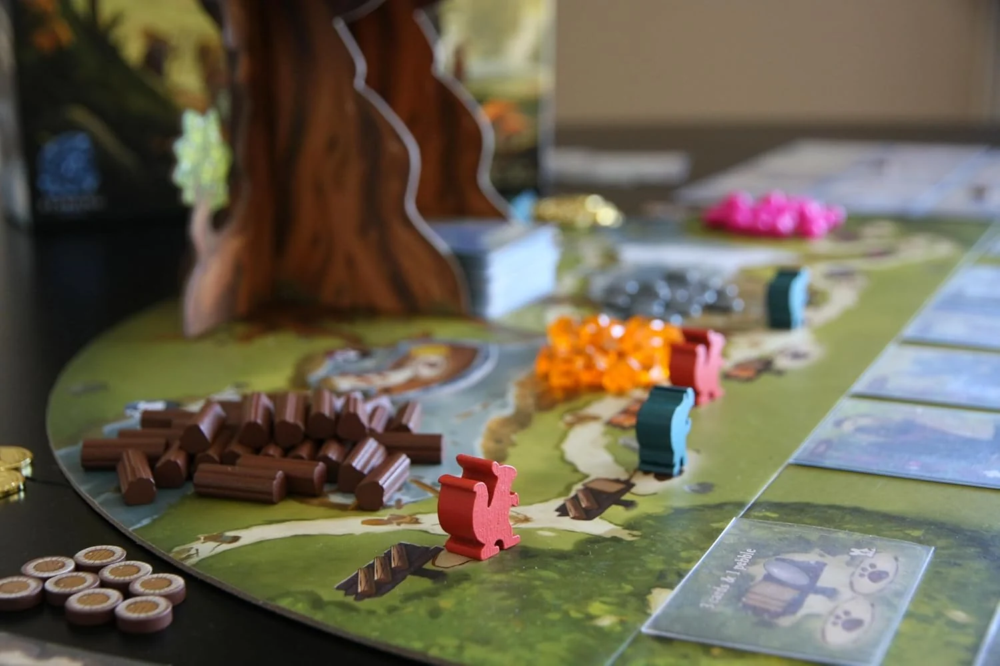
Imagem: Tabletop Tycoon (partida em andamento)Abrir esta seção
Quatro etapas, na ordem da partida: alocar, jogar cartas, as estações e a pontuação. Cada etapa traz Para entender (o porquê), Passo a passo (a regra exata), regras de caso especial a um toque e tarefas com ajuda que diminui: exemplo resolvido, complete e sua vez. Toque numa opção para ver a resposta e a explicação. No fim, uma avaliação diz o que reler, e uma folha de consulta vai para a mesa.
2Etapa 1: alocar um trabalhador
Por que funciona assimExclusivo (um trabalhador) e compartilhado (vários). Ilustração: manual Galápagos p. 8Regra adicional: Floresta com 4 jogadoresRegra adicional: Recurso que acabouRegra adicional: Baralho vazioRegra adicional: Dar cartas a um adversário
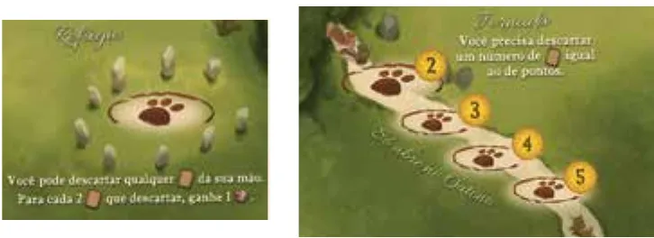
À esquerda, o Refúgio; à direita, a Jornada, com os espaços de 2 a 5 pontos (etapa 3). Ilustração: manual Galápagos p. 9Ver um exemplo resolvidoPratique esta etapa: exercícios com respostas
3Etapa 2: jogar uma carta e montar a vila
Por que funciona assim
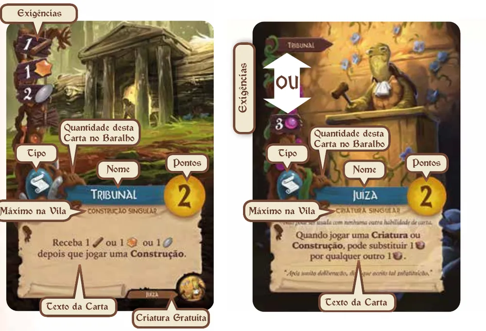
O Tribunal, Construção Singular, custa 1 graveto, 1 cristal e 2 seixos, vale 2 pontos e tem a Juíza como Criatura gratuita. A Juíza custa 3 frutos, ou nada com o Tribunal na vila. Ilustração: manual Galápagos p. 10Regra adicional: Habilidade de descontoRegra adicional: Vila cheiaRegra adicional: Ficha de Ocupado que ficaRegra adicional: AndarilhaRegra adicional: Marido e EsposaRegra adicional: Cartas com regra própriaSobre a edição: Errata da Galápagos (outubro de 2023)Ver um exemplo resolvidoPratique esta etapa: exercícios com respostas
4Etapa 3: as estações, os Eventos e a Jornada
Por que funciona assim
Estação
Trabalhadores novos
Bônus p. 13
Primavera
1
Produção: todas as suas cartas verdes agem, na ordem que você escolher
Verão
1
Pegar até 2 das cartas abertas da Campina para a mão; não há Produção
Outono
2
Produção: todas as suas cartas verdes agem
Regra adicional: Verão sem ProduçãoRegra adicional: Pegar da Campina no verão
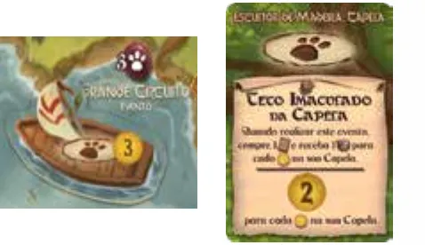
O Grande Circuito (básico) exige 3 cartas de Destino; o Teto Imaculado da Capela (especial) exige o Escultor de Madeira e a Capela. Ilustração: manual Galápagos p. 9Regra adicional: Evento já realizadoDicaVer um exemplo resolvidoPratique esta etapa: exercícios com respostas
5Etapa 4: fim da partida e pontuação
Por que funciona assimRegra adicional: Dar algo a quem já passou
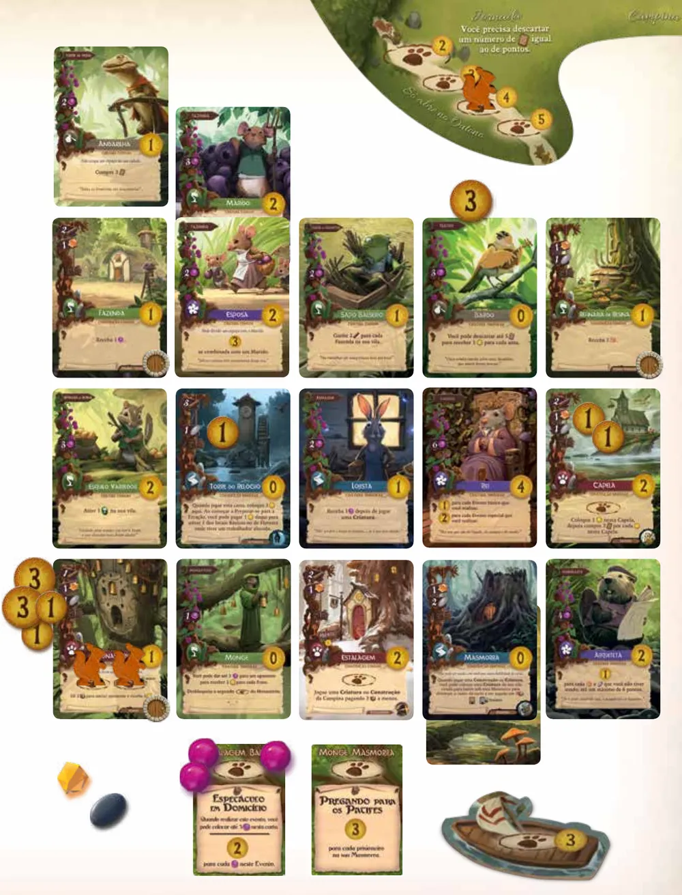
A vila do exemplo de pontuação: cartas, fichas, um trabalhador na Jornada de 4 pontos e os três Eventos realizados. Ilustração: manual Galápagos p. 15Ver um exemplo resolvidoPratique esta etapa: exercícios com respostas
6Situações especiaisOpcional
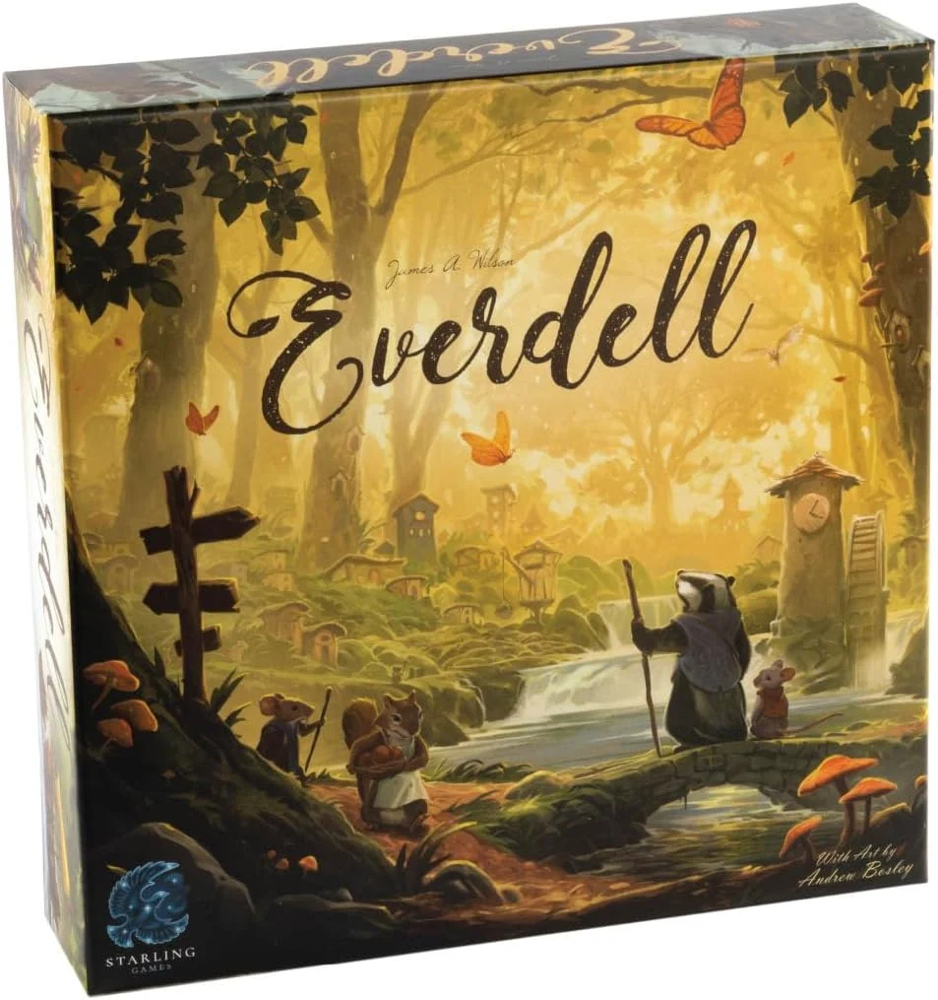
Imagem: Tabletop TycoonAbrir esta seçãoRegra adicional: Cartas que mexem na vilaRegra adicional: Trabalhador permanenteDica
7Avaliação finalOpcional
Imagem: Tabletop Tycoon (partida em andamento)Abrir esta seção
Responda sem consultar. Cada resposta diz o que reler.
1. Partida de 2 jogadores. Quantas cartas de Floresta vão para a mesa, e quantas cartas recebe quem joga em segundo?
3 e 6. Com 2 jogadores vão 3 cartas de Floresta; o segundo a jogar compra 6 p. 6. Releia a montagem.
2. Seu trabalhador está no local de 1 seixo. Você pode pôr outro trabalhador seu ali?
Não. Local exclusivo aceita 1 trabalhador, de qualquer cor p. 8. Releia a etapa 1.
3. Você tem 1 trabalhador livre e não quer jogar carta. Pode se preparar para a estação?
Nãop. 3 e 12. Releia a etapa 3.
4. É verão para você e outono para Ana. Ela vai à Jornada. E você?
Não pode. Cada jogador está na sua estação, e a Jornada é só no outono p. 9 e 12. Releia a etapa 3.
5. Empate em pontos e em Eventos. Quem vence?
Mais recursos sobrandop. 14. Releia a etapa 4.
8Para consultar durante a partida
Imagem: Tabletop Tycoon (partida em andamento)
Montagem: árvore no toco; recursos no rio; Floresta: 3 cartas (2 jogadores) ou 4 (3 ou 4); 4 Eventos básicos no rio e 4 especiais nos galhos de baixo; 8 cartas na Campina; baralho na árvore. Cada jogador: 2 trabalhadores à frente, 4 na árvore (1 primavera, 1 verão, 2 outono); cartas 5, 6, 7 e 8 pela ordem. Começa o mais humilde; sentido horário.
No seu turno, uma ação:
Alocar um Trabalhador: espaço livre; exclusivo (círculo fechado) 1 só; compartilhado (aberto) vários. Pegue na hora. Floresta: 1 por carta com 2 ou 3 jogadores. Refúgio: 1 recurso a cada 2 cartas descartadas. Destino de outro com ABERTO: o dono ganha 1 ponto. Evento: cumpra a exigência e pague. Jornada: só no outono, descarte cartas iguais aos pontos (5, 4, 3 exclusivos; 2 compartilhado).
Jogar uma Carta: da mão ou da Campina. Ordem: habilidade de desconto, pagar (ou Ocupado), repor a Campina, pôr na vila, efeito da carta, efeitos disparados. Vila: 15 espaços. Singular: 1 cópia. Criatura gratuita: Construção dela na vila, ficha de Ocupado, uma vez.
Preparar-se para a Estação: só com todos os trabalhadores alocados. Volte todos. Primavera +1 e Produção; verão +1 e até 2 cartas da Campina; outono +2 e Produção.
Sempre: mão até 8 cartas. Comprar é do baralho. Baralho vazio: embaralhe o descarte. Recurso esgotado: use outra coisa.
Fim: depois do outono, jogue até não poder ou não querer e passe. Pontos: base das cartas + fichas + bônus roxos + Jornada + Eventos. Empate: mais Eventos; depois, mais recursos sobrando.
Galápagos. Errata oficial: Everdell (arquivo EVE001_ERRATA_v2.0_10-23.pdf, 3 páginas, v2.0 de 10/2023). Mesma biblioteca, mesmo item, etiqueta Errata. Consultado em 05/11/2026.
Regras conferidas no livro de regras da edição brasileira da Galápagos (Asmodee Brasil), arquivo EVE001_regras_v2.0, de 24 páginas, e na errata oficial v2.0 de outubro de 2023, as duas da Biblioteca de Downloads da Asmodee Brasil. As páginas citadas são as do livro de regras. Este guia ensina o jogo de 2 a 4 pessoas; o modo solo, contra o rato Ragurto, tem regras próprias nas p. 16 e 17.